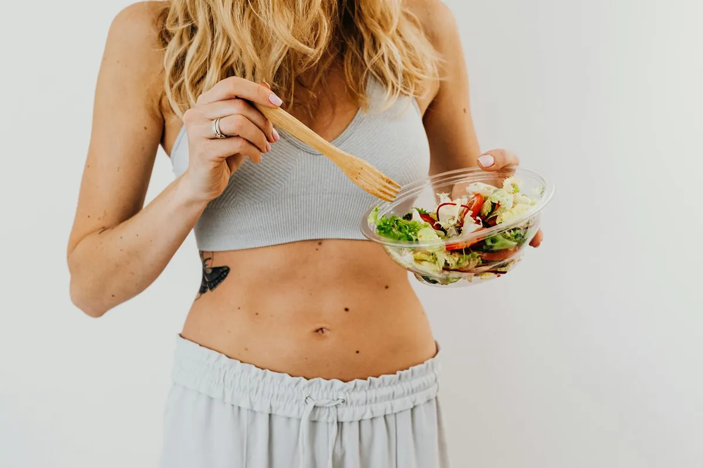

Practical Ways to Understand Calories Sustainably
Quick answer: Right now, grab a glass of water. Drink it slowly.
Key takeaways
- Consistent daily action.
- Evidence-informed choices.
- Sustainable progress.

The key for me was shifting from a mindset of 'calories in, calories out' as a rigid math problem to seeing it as a gentle guide. It’s not about hitting an exact number every single day, but about building a general awareness that helps you make choices you feel good about, most of the time. Think of it less like a strict budget and more like a general understanding of your financial flow.
The Big Lie
You need to meticulously track every single calorie, gram of protein, and ounce of fat to lose weight.
The Human Reality
While tracking can be a tool, it's not the only way, and often not the most sustainable. For many of us, myself included, obsessively counting leads to burnout. Building intuitive awareness is often more effective long-term.
My first step was simply noticing. I started paying attention to how different foods made me feel. Did that sugary cereal keep me full until lunch, or did I need another snack an hour later? Did that big salad with lean protein leave me satisfied? This simple observation is the first layer of calorie awareness. It’s about listening to your body’s cues, something we often ignore when we’re busy or stressed.
Another game-changer for me was understanding portion sizes. It’s not about eating less, necessarily, but about eating the *right amount* for my body’s needs. I learned that my usual heaping plate wasn't always serving me well. Using slightly smaller plates, or just being mindful of filling half my plate with veggies, made a huge difference without feeling like I was missing out. This is a great starting point for a related healthy tip.
The 2-Minute Win
Right now, grab a glass of water. Drink it slowly. Hydration is often mistaken for hunger and can help you feel more satisfied throughout the day.
I also learned to be kinder to myself. Some days, my calorie awareness will be on point, and other days, it'll be… less so. And that’s okay! The goal isn't perfection; it's progress. If I have a higher-calorie meal, I don't beat myself up. I just get back to my usual habits at the next meal. This flexibility is crucial for long-term success. For more on this, check out my another practical guide.
My biggest pro-tip? Focus on nutrient-dense foods. These foods are naturally more filling and satisfying, meaning you can eat a larger volume for fewer calories. Think colorful fruits and vegetables, lean proteins, and whole grains. They’re your best friends for sustainable calorie awareness.
Don't underestimate the power of mindful eating. Put away the phone, sit down at a table, and really taste your food. This helps you recognize fullness cues better and makes mealtime a more enjoyable experience. It’s a simple yet profound way to connect with your body and is a key part of a similar wellness insight.
Here’s a little something to help you get started on building this awareness:
Your Sustainable Calorie Awareness Kickstart
- Notice Your Hunger: Before eating, ask yourself: Am I truly hungry?
- Mindful Portions: Use smaller plates or visually divide your plate (half veggies, quarter protein, quarter carbs).
- Hydrate Wisely: Drink water before and during meals.
- Listen to Fullness: Stop eating when you feel comfortably satisfied, not stuffed.
- Be Kind: One meal doesn't define your progress. Get back on track at the next opportunity.
Remember, this is a journey, not a race. Building sustainable calorie awareness is about making small, consistent changes that add up over time. It’s about finding a balance that works for *you*, not a one-size-fits-all approach. If you're looking to stay consistent with this, remember your 'why'.
Educational only — not medical advice.